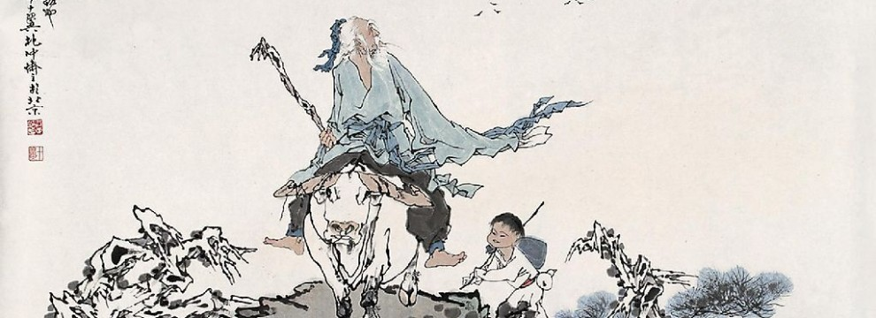

Dao De Jing
The Taoist book of the Way
The Dao De Jing, literally “The Classic of the Way and the Virtue,” is traditionally attributed to an author known only as Lao Zi, which means “Old Master.” It’s not known when exactly he lived (if at all), and likely the book has been compiled over time from different sources, rather than having been written by a single author. Read on to find out more about this fascinating classic of Eastern thought.
This article is part of a year-long series in which we examine six different philosophies of happiness and how they apply to today’s life. Find all the articles in this series here. Find all articles about hermits here.
The next part of this series on Daoism is here.
If you like reading about philosophy, here's a free, weekly newsletter with articles just like this one: Send it to me!
The three Asian philosophies
There are three great, well-known Asian traditions of thought: Buddhism, Daoism and Confucianism. All three have influenced each other over the centuries and all three cross occasionally the borders between philosophy and religion. Buddhism is primarily perceived as a religion, Daoism has been seen as both, and Confucianism is mainly a philosophy of ethics, society and state, but has occasionally also been practised in quasi-religious ways (in Malaysia, for example, schoolchildren would pray to Confucius before they begin their schooling).
Of the three, Daoism has the greatest variety of beliefs and practices that range from ethical cultivation to dietary prescriptions and breathing exercises. Daoists are, in a sense, the most anarchic of the three groups. Where Confucians believe in the value of a well-ordered society, Daoists are suspicious of human attempts to impose order and would strive to gain inspiration from the freedom and inherent meaningfulness of natural processes. The best-known Daoist text, the Dao De Jing, is often explicitly anti-intellectual:

For Confucius, one’s personal loyalties to family, friends, co-workers and superiors are more important than the rules of some abstract ethical theory.
The Dao De Jing
The Dao De Jing, literally “The Classic of the Way and the Virtue,” is traditionally attributed to an author known only as Lao Zi, which means “Old Master.” It’s not known when exactly he lived (if at all), and likely the book has been compiled over time from different sources, rather than having been written by a single author. According to one legend, Laozi was a contemporary of, but somewhat older than Confucius, which might put his birth date at around 570 BC, or right in the middle of the lifespan of Thales of Miletus, to give a Western point of reference.
Leo Tse, holding a bamboo scroll of the Dao De Jing.
The book is short, containing 81 short paragraphs that resemble aphorisms and that are, often, quite hard to make sense of. Some of this is due to their being intentionally vague, and some has to do with the character of ancient Chinese, which often omitted grammatical particles and had no punctuation, creating sentences that could be read in different ways and that often could have widely different meanings.
One might assume that this suited the Daoist programme well. Daoists are suspicious of logical thinking in the same way as Zen Buddhists are. They reject dualist logic that attempts to categorise every proposition into “true” or “false”. Zen Buddhism uses intentionally confusing koans to make the point that opposites can co-exist and that they even emerge from each other in cyclical interdependence. Daoism emphasises the shortcomings of human logic and embraces the “Way” of things — a Way that transcends the dualist logic of man.

It’s easy to see how these two traditions would speak to the desires of East Asian hermits. Leaving the world and its artificial order behind in order to embrace the order of unspoiled nature has always been part of the hermit manifesto. But, as opposed to Western hermits, who might see their hermitage as a permanent state of isolation, Chinese hermits see it as a stage in the process of personal and intellectual growth. In an interview, Bill Porter, who translated many Chinese texts and wrote a book on Chinese hermits under the pen name “Red Pine,” said:
Laozi’s journey to the west
Legend has it that the Dao De Jing, the original manifesto of Daoism, was written by Laozi as he left his country to live out his life as a hermit in the West (strangely echoing Bilbo’s journey at the end of Tolkien’s Lord of the Rings). The old man, accompanied by one kid who served as his companion and servant, comes to a remote mountain pass, where the guard invites him to stay for a few days and rest. Laozi accepts the invitation and stays in the guard’s hut, eventually giving in to the guard’s questioning and teaching him the ways of the Dao. He leaves a few pages with notes in the hands of the guard and departs for the mountains, never to be seen again. These pages, carefully preserved by Yinxi, guard of the Hanku pass, are supposedly what we today know as the Dao De Jing.
The legend is almost certainly untrue — but it has inspired many retellings over the centuries. One that I particularly love is from the German poet Bertolt Brecht (1898-1956), who was attracted by the socialist appeal of the tale: the humble guardian of the pass, a man of the people, demanding to be handed the wisdom of the old sage, and the brotherhood that emerges between the two as they spend time together in the simple guardian’s hut.
There are many translations of Brecht’s poem into English, but I’ll just give you a short summary of my own here. That’s simply a matter of copyrights. If you’d like to read more able translations, please have a look here and here. The original German text is here.
When he was seventy and frail, Brecht tells us, the teacher wanted finally to retreat from the busy life and find peace. Virtue in the land was once again weak and the evil once again grew in strength, and so he put on his shoes and took to the road.
The old man packs what he will need for the journey: a few things only. His pipe that he used to smoke, the book that he used to read. And some bread for the way.
Then comes one of the most remarkable lines of the poem: As the old man left his home, “he enjoyed the valley once more and forgot all about it.” This is a very pure expression of non-attachment, of the direct perception of the world that allows for enjoyment without clinging onto the material world.
Four days into their travel, the teacher and the boy who leads his ox are stopped by a customs officer, the guard of a mountain-pass. “Anything to declare?” the man asks. “Nothing.” And the boy explains: “He was a teacher,” which is sufficient reason to assume that the old man wouldn’t be carrying any riches.
But the dialogue doesn’t quite end here. Amused, the guard asks: “Did he find out anything?” The boy thinks for a moment. “Yes,” he says. “He found out that the water, although soft, in time can conquer mighty rocks. You see,” he tells the guard, “the strong will finally give in.”
The guard waves them to pass but then, just as they disappear around the next bend, he calls after them once more: “Old man,” he says, “What was that about the water?”
“Does this interest you?” the teacher asks.
“I’m only a guard,” the man says, “but who can conquer whom — this does interest me, indeed. If you know of that, then speak! Write it down for me. Dictate it to the kid. Knowledge like that you can’t take away with you.”

Lao Zi. Chinese painting.
Come, the guard adds, I have pen and paper and an evening meal in my hut over there. The old man looks at him. An old, worn jacket, and the man walks barefoot. This is no winner, the teacher thinks. But he’s too old to refuse the guard’s polite request, and he just says, “those who ask deserve an answer.” And so the two, the old teacher and the boy, will stay for a short while in the guard’s hut.
Seven days pass, in which the old man and the kid work every day, writing down the teacher’s wisdom. And on the last day, the boy hands the guard a stack of paper: the 81 quotes that make up the Dao De Jing.
“Let’s not just praise the wise man,” Brecht concludes, “whose name is written on the book.” Because one must first get the sage to part with his wisdom. And so thanks are due to the guard too: because he demanded his share of it.
“In the beginning was the Word”
In an amusing scene in Faust, Johann Wolfgang von Goethe’s (1749-1832) epic poem about the hubris of science, the main character, Doctor Faustus, tries to translate the first verses of John 1:1 from Greek into his native German. In the King James Bible, the verse reads: “In the beginning was the Word, and the Word was with God, and the Word was God.” Faust, being aware of the many different meanings of “logos” in the Greek original, is unable to proceed beyond this first sentence:
‘Tis written: “In the Beginning was the Word.”
Here am I balked: who, now can help afford?
The Word? – impossible so high to rate it;
And otherwise must I translate it.
If by the Spirit I am truly taught.
Then thus: “In the Beginning was the Thought”
This first line let me weigh completely,
Lest my impatient pen proceed too fleetly.
Is it the Thought which works, creates, indeed?
“In the Beginning was the Power,” I read.
Yet, as I write, a warning is suggested,
That I the sense may not have fairly tested.
The Spirit aids me: now I see the light!
“In the Beginning was the Act,” I write.
(Cited after plonialmonimormon.com from the translation by Bayard Taylor, available on gutenberg.org.)
Photo by Alex Padurariu on Unsplash
Similar to Faust’s problems with the translation of “logos,” the “Dao” or “Way” has also eluded translators for millennia. Professor David K. Jordan from UCSD has created a wonderful webpage, on which he collected ten different translations of the first paragraph of the Dao De Jing. From Lin Yutang to Red Pine, here is a small selection that shows how differently the text can be translated into English. Note that these translations have all been made by experts who knew very well what they were doing. Still, see how differently their English renditions turn out:
The Tao that can be told of Is not the Absolute Tao; The Names that can be given Are not Absolute Names. (Lin Yutang)
The Way that can be told of is not an Unvarying Way; The names that can be named are not unvarying names. (Arthur Waley)
There are ways but the Way is uncharted; There are names but not nature in words: Nameless indeed is the source of creation But things have a mother and she has a name. (R.B. Blakney)
Nature can never be completely described, for such a description of nature would have to duplicate Nature. No name can fully express what it represents. (Archie Bahm)
The truth that may be told is not everlasting Truth. The name given to a thing is not the everlasting Name. (Yáng Jiāluò)
The divine law may be spoken of, but it is not the common law. Things may be named, but names are not the things. (XǓ Yuānchōng)
If you’d like to give it a go on your own, head over to the Chinese Text Project website, which has a complete copy of the Dao De Jing in big, easy to read Chinese characters, together with a classic translation by James Legge.
So, that’s it for today. Stay tuned, because next week I’ll try to bring you an overview of the main points in the Dao De Jing and we’ll then be able to try and see how we might apply its wisdom to our own everyday lives.
◊ ◊ ◊
Thanks for reading! The next part of this series on Daoism is here.

Bertolt Brecht’s collected poems in a wonderful edition. If you have never read Brecht’s poems, you have missed one of the greatest pleasures available in the world of letters. Kindle version here.
Amazon affiliate link. If you buy through this link, Daily Philosophy will get a small commission at no cost to you. Thanks!

Andreas Matthias on Daily Philosophy: